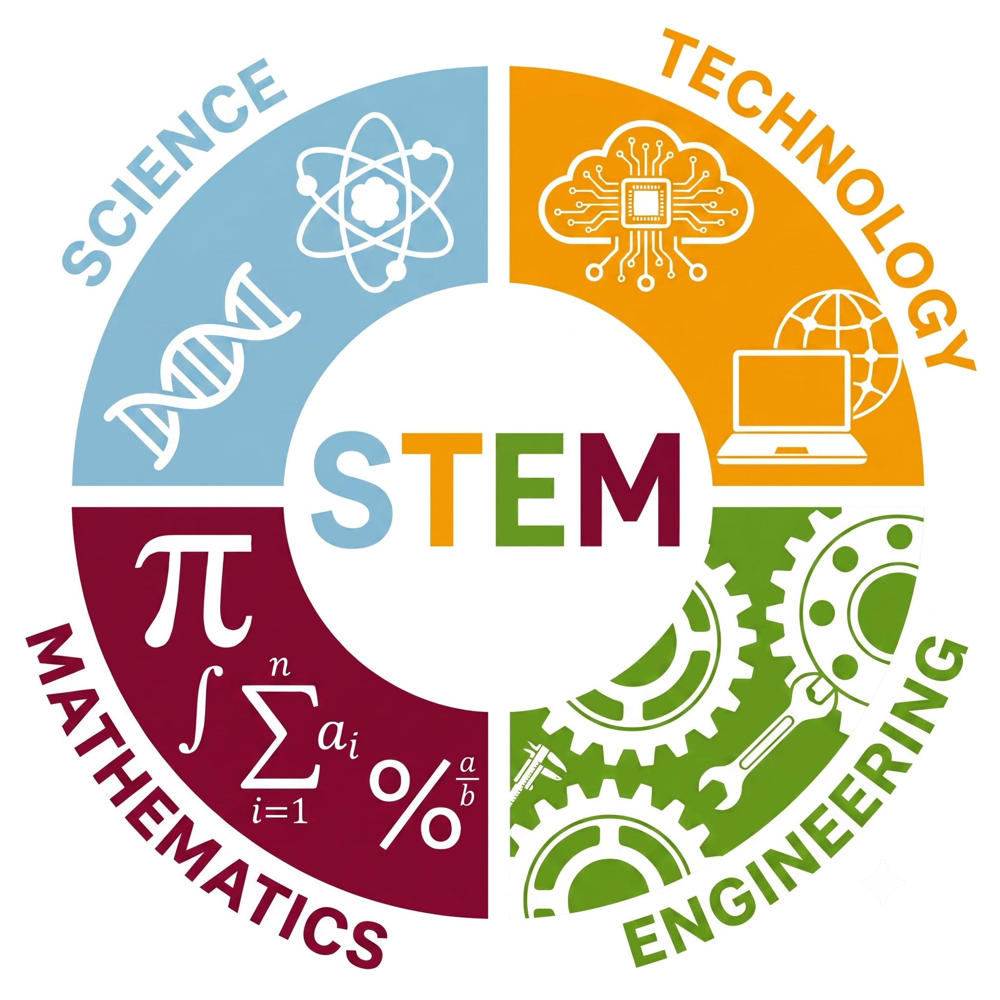

Conheça uma nova forma de educar
A robótica educacional desperta a curiosidade, incentiva a criatividade e
desenvolve habilidades que vão muito além da sala de aula.
Por meio de atividades práticas, os estudantes aprendem conceitos
de ciência, tecnologia, engenharia e matemática de forma integrada,
enquanto fortalecem o pensamento crítico, o raciocínio lógico e o trabalho em equipe.
Ofereça uma experiência de aprendizagem moderna, capaz de engajar os alunos
e posicionar sua escola como referência em educação tecnológica.
Que o ensino de robótica nas escolas é uma tendência você já sabe, mas como ele pode ajudar sua escola?
A abordagem STEM (Ciência, Tecnologia, Engenharia e Matemática) integra diferentes áreas
do conhecimento em experiências práticas, estimulando os estudantes a investigar, criar,
testar e resolver problemas reais. Mais do que aprender conteúdos isolados, os alunos
desenvolvem competências como raciocínio lógico, pensamento crítico, criatividade,
colaboração e autonomia, tornando o aprendizado mais significativo e conectado ao mundo
em que vivem.
Prepare sua escola para levar a Educação STEM à sala de aula
com uma metodologia alinhada à Base Nacional Comum Curricular (BNCC).

Agora é o momento de inovar e a Robot Society pode ajudar a sua instituição
Nossa missão é tornar a robótica acessível a todas as escolas e professores.
Por isso, oferecemos desde planos de aula prontos para aplicação,
ideais para quem deseja iniciar rapidamente, até uma Formação Completa em Robótica Pedagógica,
que prepara educadores para u tilizar a robótica como uma metodologia de ensino
em diferentes disciplinas e níveis de ensino.
Independentemente do ponto de partida, você encontrará conteúdos, materiais e suporte
para levar experiências de aprendizagem mais criativas, práticas e significativas aos seus alunos.